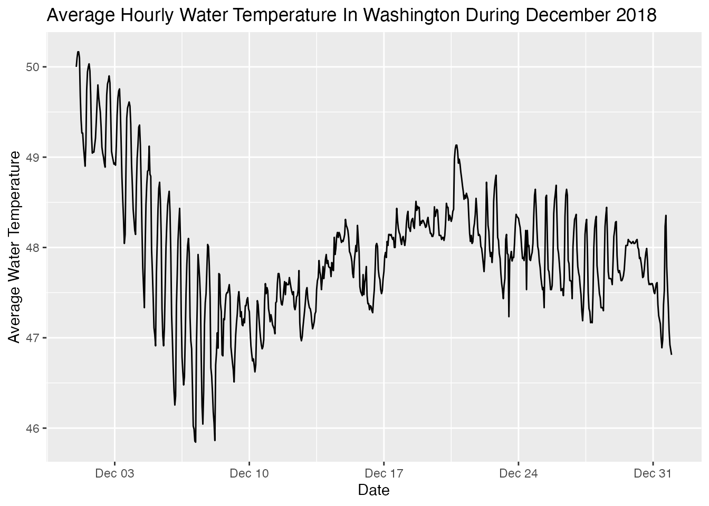
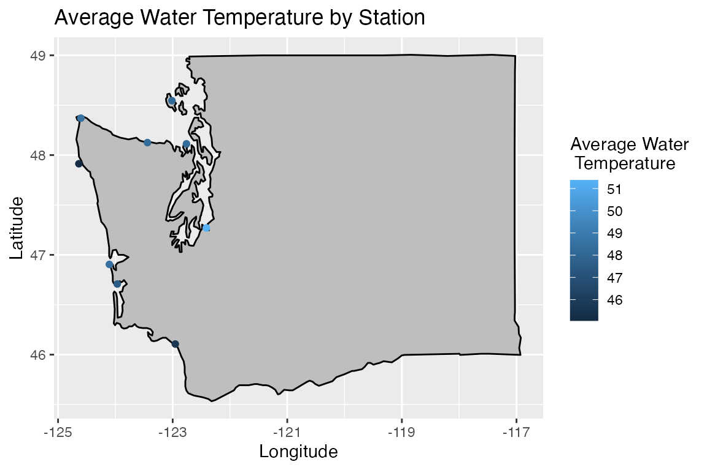

vignettes/getting_started.Rmd
getting_started.RmdThe noaaoceans package is designed to facilitate access to various National Oceanic and Atmospheric Administration (NOAA) data sources. The current version focuses on accessing data from the CO-OPS API. The package also facilitates the collection of basic metadata for each of the stations that collect the data available in the API.
There are two functions included in the package and they are often used together to provide the information of interest. The first function in the package is list_coops_stations(), which allows users to find metadata about each NOAA data collection station. Each time the function is called, it gathers the data from NOAA’s website, so the station metadata and the status of its sensors is always up-to-date. The other function in the package is query_coops_data(). This function allows the user to specify a location, data type, and time period of interest. For details on the types of data available, see the CO-OPS API Documentation.
In developing the noaaoceans package I have tried to make the package as user-friendly as possible. Both functions return a data frame. I feel that the typical R user is most familiar with this data structure and allows the user to immediately use the popular tools in the tideyverse to assist in their analysis. In the remainder of this article I will take the reader through an example using the package to collect and visualize water temperature data for locations in the state of Washington.
In the example below we start by loading the noaaoceans package and supporting packages dplyr and ggplot2. The maps and mapsdata packages will be used in the second example. Calling list_coops_stations() returns a data frame with metadata for each of NOAA’s measurement stations.
library(noaaoceans)
library(dplyr)
library(ggplot2)
library(maps)
library(mapdata)
# Get a list of all the stations.
station_df <- list_coops_stations()
# Inspect our data frame
station_df %>% dim()## [1] 375 15## # A tibble: 6 x 15
## station_id station_names station_state station_lat station_long
## <chr> <chr> <chr> <chr> <chr>
## 1 1611400 Nawiliwili HI 21.9544 -159.3561
## 2 1612340 Honolulu HI 21.3067 -157.867
## 3 1612480 Mokuoloe HI 21.4331 -157.79
## 4 1615680 Kahului, Kahului Harbor HI 20.895 -156.4767
## 5 1617433 Kawaihae HI 20.0366 -155.8294
## 6 1617760 Hilo, Hilo Bay, Kuhio Bay HI 19.7303 -155.06
## # … with 10 more variables: date_established <chr>, water_level <chr>,
## # winds <chr>, air_temp <chr>, water_temp <chr>, air_pressure <chr>,
## # conductivity <chr>, visibility <chr>, humidity <chr>, air_gap <chr>The returned data frame has a total of 15 columns. The first several columns identify the station and provide its geographic location. The remaining columns indicate the status of the of the sensors at each station. In these columns a 1 indicates the sensor is working, while a 0 indicates the sensor is not working. A NA indicates that that particular sensor does not exist at the given station.
After taking a look at the data returned by list_coops_stations(), it’s time to identify our stations of interest. In this case I want to find all stations in the state of Washington (WA) that collect water temperature. This is accomplished by simply filtering the data frame with dplyr::filter() and the appropriate logic.
# Filter to stations in Washington with Water Temp Sensor
wa_station <- station_df %>%
filter(station_state == 'WA' & water_temp == '1')The results of filtering returns a data frame with records for 9 locations that meet the specified criteria. The data from the station_id column will be used when querying the API with query_coops_data(). Via the API we’ll capture hourly water temperatures for each station in December 2018. We’ll pass each of these conditions as an argument to the function. For a complete list of arguments see the help documentation help(query_coops_data). The details and options available to each argument are covered in the CO-OPS API Documentation.
The API only allows the user to pass a single location at time. To collect data for each station in Washington I loop through our vector of station_ids and update the station_id = argument in query_coops_data. Each call returns a data frame which will be concatenated to a storage data frame to create a full set of water temperature data.
# Create an empty storage data frame.
water_temp <- data.frame()
# Loop through the station and call the API for each station
for (i in wa_station$station_id) {
query_df <- query_coops_data(station_id = i,
start_date = '20181201',
end_date = '20181231',
data_product = 'water_temperature',
interval = 'h') # hourly readings
# Add current station results to the storage data frame
water_temp <- water_temp %>% bind_rows(., query_df)
}
dim(water_temp)## [1] 6696 4
names(water_temp)## [1] "t" "v" "f" "station"
water_temp %>% head()## t v f station
## 1 2018-12-01 00:00 48.4 0,0,0 9440422
## 2 2018-12-01 01:00 48.4 0,0,0 9440422
## 3 2018-12-01 02:00 48.4 0,0,0 9440422
## 4 2018-12-01 03:00 48.4 0,0,0 9440422
## 5 2018-12-01 04:00 48.4 0,0,0 9440422
## 6 2018-12-01 05:00 48.4 0,0,0 9440422Now that we have our data, we’ll start by plotting the average hourly water temperature in Washington. Before I can do that I need to make a few data type corrections. Both our time stamp value (t) and the water temperature (v) are returned as character strings. These will be converted to POSIXct and numeric respectively.
# Correct data types.
water_temp <- water_temp %>%
mutate(v = as.numeric(v), t = as.POSIXct(t))
water_temp %>%
group_by(t) %>%
# Compute the hourly average.
summarise(avg_temp = mean(v, na.rm = TRUE)) %>%
# Plot the hourly average.
ggplot(aes(x = t, y = avg_temp)) +
geom_path() +
labs(x = "Date",
y = 'Average Water Temperature',
title = 'Average Hourly Water Temperature In Washington During December 2018')
As one might expect the average hourly temperature decreases over the month as winter sets in. There is a steady decrease over the first ten days, before the temperature rises again and holds fairly steady after the middle of the month. There appears to be a daily pattern where the temperature drops at night and increases during the day.
One consequence of finding the hourly average is that we have hidden any geographic effects. There might be temperature differences at each station. A map with each station and the average temperature at that station will help study this.
# Compute the average temperature by location.
station_average <- water_temp %>%
group_by(station) %>%
summarise(avg_temp = mean(v, na.rm = TRUE))
# Join the station metadata so we have the location of each station.
station_average <- station_average %>%
inner_join(., wa_station, by = c('station' = 'station_id')) %>%
# Convert the station corrdinates to numeric data type to work with plot
mutate(station_long = as.numeric(station_long),
station_lat = as.numeric(station_lat))
# Inspect our data frame before plotting
station_average %>% dim()## [1] 9 16## # A tibble: 6 x 16
## station avg_temp station_names station_state station_lat station_long
## <chr> <dbl> <chr> <chr> <dbl> <dbl>
## 1 9440422 45.6 Longview WA 46.1 -123.
## 2 9440910 47.6 Toke Point WA 46.7 -124.
## 3 9441102 48.5 Westport WA 46.9 -124.
## 4 9442396 45.1 La Push, Quillayute R… WA 47.9 -125.
## 5 9443090 48.6 Neah Bay WA 48.4 -125.
## 6 9444090 48.2 Port Angeles WA 48.1 -123.
## # … with 10 more variables: date_established <chr>, water_level <chr>,
## # winds <chr>, air_temp <chr>, water_temp <chr>, air_pressure <chr>,
## # conductivity <chr>, visibility <chr>, humidity <chr>, air_gap <chr>
# Get a map for Washington state.
wa_map <- ggplot2::map_data('state') %>%
filter(region == 'washington')
ggplot(data = wa_map) +
# Plot the map
geom_polygon(aes(x = long,
y = lat,
group = group),
fill = "gray",
color = "black") +
# Add the stations & use color for the average temp.
geom_point(aes(x = station_long,
y = station_lat,
color = avg_temp),
data = station_average) +
labs(x = 'Longitude',
y = 'Latitude',
title = 'Average Water Temperature by Station') +
scale_color_continuous(name ="Average Water\n Temperature")
After looking at some basic examples of using noaaoceans we should highlight a known issue with the CO-OPS API. While developing the package we encountered a few occasions where the data inventory indicates that data exist for a given time period, but it isn’t available via the API.
A specific example as of this this writing is the Neah Bay (Station ID: 9443090). The station’s data inventory indicates that water temperature is available for all of 2018. However, when querying the API the data for January and February 2018 isn’t available.
Depending on the date requested in the API call, the API handles this problem in different ways. When setting the date range for only the missing period, the API response includes an error indicating that no data was found.
neah_bay_january <- query_coops_data(station_id = '9443090',
start_date = '20180101',
end_date = '20180228',
data_product = 'water_temperature',
interval = 'h')## Error in query_coops_data(station_id = "9443090", start_date = "20180101", : No data was found. This product may not be offered at this station at the requested time.When querying the API for the Neah Bay station and request all of 2018 an error is not included in the response. The expected data frame is returned.
neah_bay_year <- query_coops_data(station_id = '9443090',
start_date = '20180101',
end_date = '20181231',
data_product = 'water_temperature',
interval = 'h')
neah_bay_year %>% head()## t v f station
## 1 2018-01-01 01:00 1,1,1 9443090
## 2 2018-01-01 02:00 1,1,1 9443090
## 3 2018-01-01 03:00 1,1,1 9443090
## 4 2018-01-01 04:00 1,1,1 9443090
## 5 2018-01-01 05:00 1,1,1 9443090
## 6 2018-01-01 06:00 1,1,1 9443090A quick inspection of the returned data frame shows that the temperature value (v) is missing for the January and February time stamps. In summary if you query for a period where there is only missing data you’ll get an error. If you submit a query for a date range and a subset of that period is missing data will be returned with missing values for the appropriate dates.
If you encounter a situation where it appears that data should be available for a given query, you might want to contact NOAA’s User Services(co-ops.userservices@noaa.gov). They have been very responsive, when issues have been raised and worked to get the missing data accessible if the data is in their database.